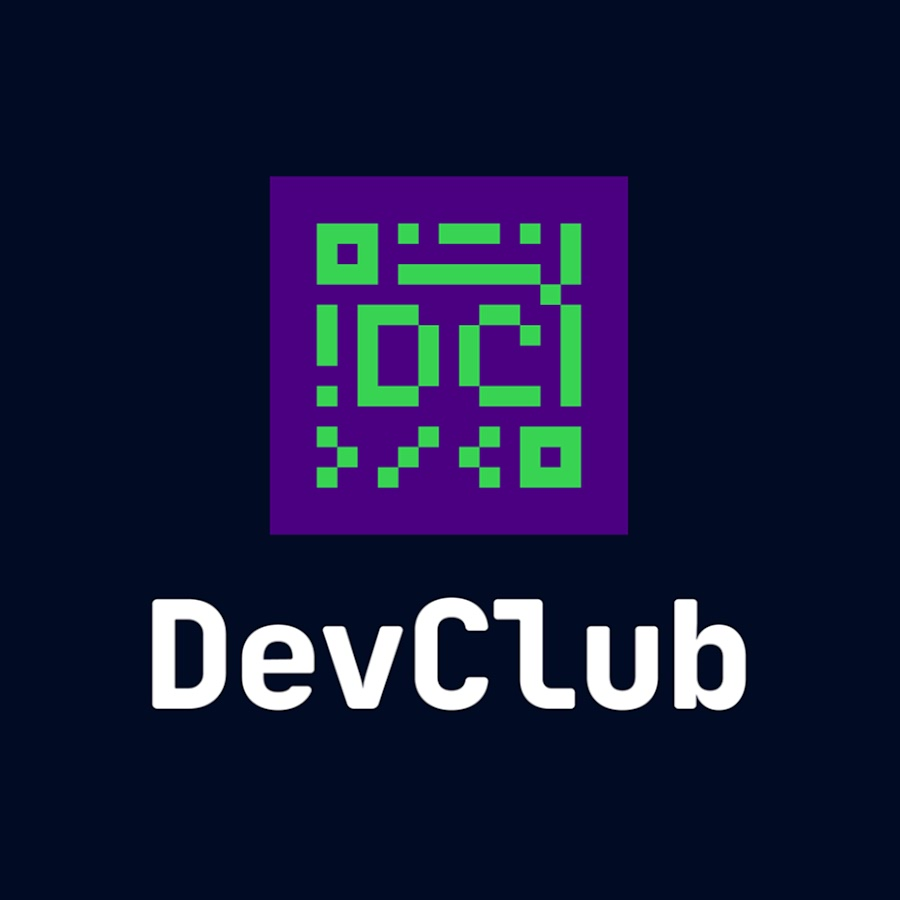

DEV CLUB

O DevClub é uma escola de tecnologia focada em formar programadores prontos para o mercado
— do zero ao nível profissional. Aqui, o aprendizado é direto ao ponto, com uma metodologia
prática desenvolvida para garantir domínio técnico, experiência real em projetos e preparo para
as melhores oportunidades em tecnologia.
Aprenda Programação com Quem Vive Tecnologia Na CodeSphere Academy, você aprende programação na prática, desenvolvendo projetos reais desde a primeira aula. Nossa missão é preparar alunos para o mercado de tecnologia, formando profissionais capazes de trabalhar nas maiores empresas do Brasil e do exterior. ✅ Mais de 18.000 alunos formados ✅ 96% de empregabilidade ✅ Certificado reconhecido nacionalmente ✅ Aulas ao vivo e gravadas ✅ Mentoria individual
-"Sou iniciante mesmo assim posso competir as vagas na comunidade DevClub?" -SIM VOCÊ PODE! Independente do seu nivel atual, o DevClub foi criado para quem quer entrar, crescer ou se consolidar no mercado de tecnologia